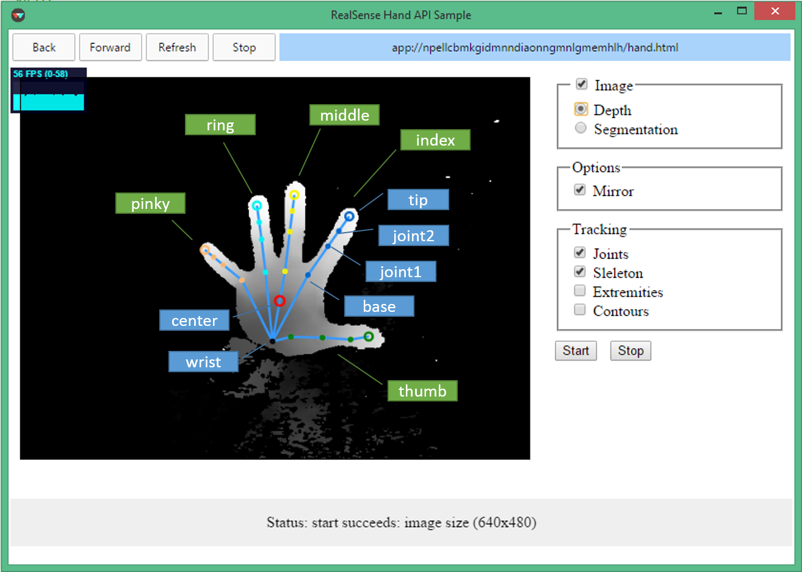

This specification describes support for real-time 3D hand motion tracking by using depth camera.
This document was published by the Crosswalk Project as an API Draft. If you wish to make comments regarding this document, please send them to crosswalk-dev@lists.crosswalk-project.org. All comments are welcome.
The APIs described in this document are exposed through
realsense.HandTracking module.
The hand tracking capability can be accessed via HandModule
interface. It allows to control, configure the hand tracking and retrieve
the hand information.
The tracked hand provides full 3D skeleton information including
all 22 joints and fingers data as following diagram illustrated.

The tracked hand model can be accessed via Hand interface.
HandModule
The HandModule is the main interface for
hand tracking.
The init() method initializes the hand tracking.
This method returns a promise.
The promise will be fulfilled if there are no errors.
The promise will be rejected with the DOMException
object defined in [[!WEBIDL]] if there is a failure.
The start() method starts the hand tracking.
This method returns a promise.
The promise will be fulfilled with the image size if there are no errors.
The promise will be rejected with the DOMException
object if there is a failure.
The stop() method stops the hand tracking.
This method returns a promise.
The promise will be fulfilled if there are no errors.
The promise will be rejected with the DOMException
object if there is a failure.
The track() method tracks the hands.
This method returns a promise.
The promise will be fulfilled with an array of tracked hands
if there are no errors.
The promise will be rejected with the DOMException
object if there is a failure.
The getDepthImage() method gets the latest processed depth image.
This method returns a promise.
The promise will be fulfilled with the processed depth image if there are no errors.
The promise will be rejected with the DOMException
object if there is a failure.
Hand
The Hand is the interface of the tracked hand.
The unique ID of given tracked hand.
The time-stamp in which the collection of the hand data was completed.
true if there is a valid hand calibration, otherwise false.
The side of the body to which the hand belongs (when known).
The location and dimensions of the tracked hand, represented by a 2D bounding box (defined in pixels).
The 2D center of mass of the hand in image space (in pixels).
The 3D center of mass of the hand in world space (in meters).
The quaternion representing the global 3D orientation of the palm.
The palm radius in image space (number of pixels).
The palm radius in world space (meters).
The extremity points of tracked hand.
The finger data of tracked hand.
The joints data of tracked hand.
The tracking status.
The degree of openness of the hand.
The normalized joints data of tracked hand.
The getSegmentationImage() method retrieves the
2D image mask of the tracked hand.
This method returns a promise.
The promise will be fulfilled with the mask image if there are no errors.
The promise will be rejected with the DOMException
object defined in [[!WEBIDL]] if there is a failure.
The getContours() method retrieves the contours of
the tracked hand.
This method returns a promise.
The promise will be fulfilled with the array of contours if there are no errors.
The promise will be rejected with the DOMException
object defined in [[!WEBIDL]] if there is a failure.
Image
Point2D
The x coordinate of the point.
The y coordinate of the point.
Point3D
The x coordinate of the point.
The y coordinate of the point.
The z coordinate of the point.
Point4D
The x coordinate of the point.
The y coordinate of the point.
The z coordinate of the point.
The w coordinate of the point.
Rect
The horizontal coordinate of the top left pixel of the rectangle.
The vertical coordinate of the top left pixel of the rectangle.
The rectangle width in pixels.
The rectangle height in pixels.
ImageSize
The rectangle width in pixels.
The rectangle height in pixels.
ExtremityData
The 3D world coordinates of the extremity point.
The 2D image coordinates of the extremity point.
ExtremityDataPoints
The closest point to the camera in the tracked hand.
The left-most point of the tracked hand.
The right-most point of the tracked hand.
The top-most point of the tracked hand.
The bottom-most point of the tracked hand.
The center point of the tracked hand.
FingerData
The degree of "foldedness" of the tracked finger, ranging from 0 (least folded / straight) to 100 (most folded).
The radius of the tracked fingertip. The default value is 0.017m while the hand is not calibrated.
Fingers
The finger data of thumb finger.
The finger data of index finger.
The finger data of middle finger.
The finger data of ring finger.
The finger data of pinky finger.
JointData
RESERVED: for future confidence score feature
The geometric position in 3D world coordinates, in meters.
The geometric position in 2D image coordinates, in pixels. (Note: the Z coordinate is the point's depth in millimeters.)
A quaternion representing the local 3D orientation of the joint, relative to its parent joint.
A quaternion representing the global 3D orientation, relative to the "world" y axis.
The speed of the joints in 3D world coordinates (X speed, Y speed, Z speed, in meters/second).
FingerJoints
The joint data of finger base.
The data of finger joint1.
The data of finger joint2;
The joint data of finger tip.
Joints
The center of wrist.
The center of the palm.
The joints of thumb finger.
The joints of index finger.
The joints of middle finger.
The joints of ring finger.
The joints of pinky finger.
PixelFormat
The depth map data in 16-bit unsigned integer. The values indicate the distance from an object to the camera's XY plane or the Cartesian depth.The value precision is in millimeters.
The 8-bit gray format.
BodySide
The side was not determined.
Left side of the body.
Right side of the body.
TrackingStatus
Optimal tracking conditions.
The hand is outside the field of view (in the x/y axis).
The hand is outside the depth range.
The hand is moving at high speed.
The hand fingers pointing the camera.
var handModule;
var stopped = false;
var startButton = document.getElementById('start');
var stopButton = document.getElementById('stop');
function handleError(error) {
// The error is an instance of DOMException.
console.log(error.name + ': ' + error.message);
}
function trackHands() {
handModule.track().then(
function(hands) {
// The hands argument is an array of Hand objects.
// ... process hands ...
// Continue to track hands.
if (!stopped)
trackHands();
},
handleError
);
}
function main() {
try {
// Create an instance of HandModule interface.
// It is the main interface of hand tracking capability.
handModule = new realsense.Hand.HandModule();
} catch (e) {
console.log(e);
}
handModule.init().then(
function() {
console.log('Succeed to init.');
startButton.disabled = false;
stopButton.disabled = false;
},
handleError
);
startButton.onclick = function(e) {
handModule.start().then(
function(imageSize) {
// The imageSize argument is an ImageSize object.
console.log('Succeed to start.')
stopped = false;
trackHands();
},
handleError
);
};
stopButton.onclick = function(e) {
stopped = true;
handModule.stop().then(
function() {
console.log('Succeed to stop.');
},
handleError
);
};
}